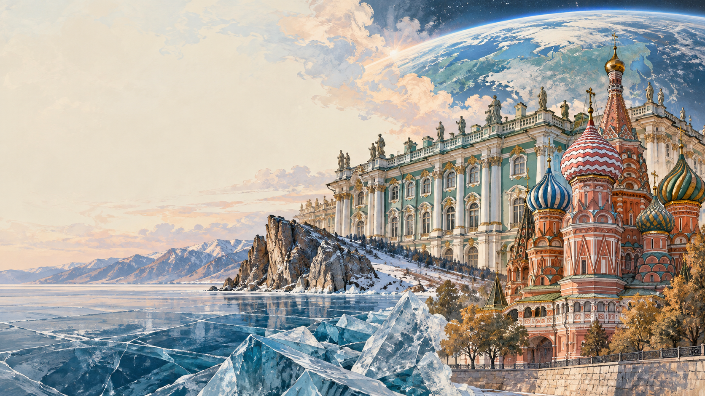

💡 Use full sentences with «I think…», «In my opinion…», «Personally, I…» — the same registers you need for Task 3 & 4.
First — read & flip — make sure you can use each word in a sentence:
1. Pyotr Tchaikovsky was born in Votkinsk, a small factory town in the , in 1840.
2. Isaac Levitan is often called the father of the Russian painting school.
3. Dostoevsky wrote Crime and Punishment in a two-roomed flat on in Petersburg.
4. Tolstoy's family estate, Yasnaya Polyana, lies in the region, south of Moscow.
5. The Golden Ring is a cluster of medieval towns including , Vladimir, Yaroslavl and Rostov Veliky.
6. The Northern Lights are best observed above the , in places like Teriberka and the Khibiny mountains.
7. The Mariinsky Theatre stands on the in Saint Petersburg.
8. Tchaikovsky's was almost booed off the Bolshoi stage at its 1877 premiere.
9. Rudolf famously defected from the Soviet Union during a Mariinsky tour in Paris in 1961.
10. The scientific explanation of the aurora is a stream of charged particles from the sun colliding with atmospheric .
Right form = right ending. Watch for spelling (achieve → achievement), part of speech, positive/negative prefix. Six early items to warm up your suffix-radar.
Speaker A: My grandmother dragged me to Votkinsk last summer — a tiny factory town in the Urals with one proper hotel and a lot of mosquitoes — and I grumbled all the way there. Then we walked into the wooden house where Tchaikovsky was born, saw his first upright piano standing by the window, and I actually started crying. The guide let me put one finger on the key she said he had played the day his mother died. I've been listening to the First Piano Concerto on repeat ever since, and I'm now seriously thinking about applying to Gnesin.
Speaker B: We did a two-day art-history trip to the Tretyakov in September and I spent half of it in the Levitan hall. His Golden Autumn is the kind of painting you don't just look at — you literally fall into. I'd always thought landscape painting was boring, something old ladies did on weekends, but Levitan proves me completely wrong. He gives you a bend in the Volga, a thin wooden bridge, and suddenly you want to pack a bag and go there yourself. I bought the reproduction and it's over my bed now.
Speaker C: For my literature coursework I had to read Crime and Punishment, which I'd been avoiding since year nine. I read it in four days, and on the fifth I took the metro to the Dostoevsky flat museum on Kuznechny Lane. The staircase is the exact one Raskolnikov climbs, step for step — I counted. The ink-well, the desk, the pocket watch stopped at eight thirty-six in the evening of his death. I came home and reread the ending, and this time, I understood the last line.
Speaker D: My family went to Yasnaya Polyana for the long weekend — Tolstoy's estate, about three hours south of Moscow. I expected a quick museum visit, but we ended up walking for four hours in the oak forest, past the pond where he swam, past the apple orchard he planted himself. His grave is just a long rectangular mound of grass, no cross, no name, because in old age he decided a cross would be hypocritical. It is honestly the quietest place I have ever stood in my life.
Speaker E: Last autumn my parents took me on the Golden Ring road trip — Suzdal, Vladimir, Yaroslavl, Rostov Veliky — five days in the car, two churches per hour, pancakes with sour cream in every little café. In Suzdal there's a local by-law forbidding any new building taller than a bell tower, so the skyline hasn't changed since the eighteenth century. I didn't know Russia still had places where you can hear the cuckoo above the morning bells. I am going back next spring, I promise myself.
Speaker F: This March I finally saw the Northern Lights, from a wooden lodge outside Teriberka, two hundred and thirty kilometres above the Arctic Circle. We waited four nights in minus twenty degrees before the sky suddenly turned pink and green at two in the morning, and the whole group just stopped breathing. The physics teacher in me kept whispering «it's just solar wind on oxygen atoms», but the rest of me cried quietly in a thermos of tea. I'm applying to the astrophysics track at MSU now.
Anna: Denis, guess what — my class is going to Yasnaya Polyana next Friday!
Denis: Lucky you! The whole day in Tolstoy's forest?
Anna: Almost. We leave Moscow at seven in the morning in two coaches, and we're back around nine in the evening. Our literature teacher is coming — and our history teacher, Pavel Sergeyevich.
Denis: Have you booked a guide?
Anna: Yes, a literature specialist — because half of our class is already reading War and Peace. It costs extra, but the school pays for the coach tickets.
Denis: Nice. What are you most excited about?
Anna: The grave in the forest. I've been to the main house twice before on family trips, but never to the glade where he's buried.
Denis: I've never been at all. My parents keep saying we'll go «next summer», but next summer never comes.
Anna: Come with us! Actually no — my teacher said the coach is full.
Denis: Fine. Take good photos then.
Host: Anna, thanks for joining us. You are only 24, but you already dance the leading role of Odette in Swan Lake. Tell us how it all started.
Anna: Well, I grew up in Petrozavodsk, in a family of amateur musicians. My mother played in the city orchestra, so music was our dinner-table conversation. But interestingly, I didn't want to be a dancer. I wanted to be a figure skater. I only changed my mind at eleven after a Mariinsky touring company visited our local theatre.
Host: Where did you train?
Anna: I did my first years at the Petrozavodsk choreographic school, then moved to Saint Petersburg for the Vaganova Academy. I joined the Mariinsky at nineteen, danced in the corps for three years, and became a principal soloist last September. My signature roles are Odette-Odile in Swan Lake and Giselle.
Host: Have you performed abroad?
Anna: Yes, one tour in Milan, and last summer we performed in Tokyo for two weeks. Both tours were useful, but I always want to come home to the Mariinsky stage. My audience is here — the Petersburg public, who have been watching ballet for three centuries.
Host: What's the biggest difficulty in your work?
Anna: Money is not the main issue — the theatre pays well. The real problem is time. A new production takes three months of daily rehearsal before the premiere. And an injury can ruin months of preparation.
Host: Any advice for young girls who want to enter ballet?
Anna: Two things. First — don't listen to people who say «ballet is finished, nobody watches it any more». They're wrong. Second — start small, but start early. A local dance class counts. A YouTube channel counts. Show your love of the stage, don't just talk about it.
Ask any foreigner what «Russian culture» means and you will usually hear four answers: music, literature, painting and ballet. These four pillars were built over three centuries, and today they still shape how the world looks at Russia.
The first pillar is classical music. Pyotr Tchaikovsky wrote the ballets, operas and symphonies that even people who «don't like classical» recognise after three seconds, .
The second pillar is the novel. Dostoevsky and Tolstoy are the two names you cannot avoid at university anywhere in the world. Students read Crime and Punishment or War and Peace, . The flat museum on Kuznechny Lane in Saint Petersburg still receives thousands of visitors a year.
The third pillar is landscape painting. Isaac Levitan, who died at thirty-nine, left behind birch trees, bends in the Volga and quiet autumn mornings that have become shortcuts to the Russian soul, . Walk through the Tretyakov Gallery and you will see Russians stand silently in front of Golden Autumn for ten minutes at a time.
The fourth pillar is ballet. The Mariinsky in Saint Petersburg and the Bolshoi in Moscow trained the dancers who later became legendary all over the world, .
And then there is a fifth, quieter pillar — the Russian landscape itself: the little towns of the Golden Ring, Lake Baikal, the Arctic sky above Teriberka where the Northern Lights appear every winter. Even in the twenty-first century, writers and composers keep returning there for inspiration . For many Russians, that is where the four pillars still meet.
Pyotr Ilyich Tchaikovsky was born in 1840 in Votkinsk, a small factory town in the Urals, where his father ran the local metalworks. The family had an upright piano in the house, and little Pyotr spent so many hours at the keys that at the age of six his nanny wrote in her diary: «This boy will either go mad or become a musician.» His mother, a strong amateur singer, died of cholera when he was fourteen — a loss that returned to his music for the rest of his life.
At first his parents sent him to study law in Saint Petersburg, and for three years he actually worked as a civil servant, writing songs in the evenings. In 1861 he quietly left his desk and enrolled in the brand-new Saint Petersburg Conservatory — one of its first ever students. He was twenty-two, considered dangerously old to start a professional music career, and he had almost no money. But four years later he was already teaching composition at the Moscow Conservatory, and by thirty he had written his First Piano Concerto, which the leading pianist of the time called «unplayable» before changing his mind entirely.
Tchaikovsky's biggest hits came from the ballet. Swan Lake was coldly received at its 1877 premiere — the choreography was weak and the dancers unprepared — but by the second production, it had become the symbol of Russian ballet worldwide. The Sleeping Beauty and The Nutcracker followed. His operas — Eugene Onegin and The Queen of Spades — put Pushkin's poetry on the stages of Europe. In 1891 he even crossed the Atlantic to conduct the opening concert of Carnegie Hall in New York, becoming the first Russian composer to be welcomed as an international star.
His private life was less bright. A brief, unhappy marriage ended within weeks; a long correspondence with a rich widow, Nadezhda von Meck, kept him financially safe for thirteen years but ended abruptly in 1890 without a clear explanation. Tchaikovsky died in Saint Petersburg in November 1893, nine days after conducting the first performance of his Sixth Symphony, the «Pathétique». The official cause of death was cholera, from a glass of unboiled water; biographers have been arguing about the real reasons ever since. What is beyond argument is that today, more than a hundred and thirty years later, no month passes anywhere in the world without a Tchaikovsky performance somewhere on the planet.
Read each text and put the word in CAPITALS at the end of the line into the correct form so that it fits the text grammatically. Only one word goes in each gap.
Choose the best option in each drop-down.
These 7 items use Dana's active vocabulary from the year (education, personality, culture, linking). Choose carefully.
Write a reply. In your reply: answer his 3 questions, then ask 3 questions about his favourite kind of concert or exhibition in Manchester.
| Cultural event | % of students |
|---|---|
| Ballet or opera (Mariinsky, Bolshoi, local theatres) | 14 % |
| Classical music concert (Tchaikovsky, Rachmaninoff) | 12 % |
| Painting exhibition (Tretyakov, local gallery) | 22 % |
| Writer's house museum (Tolstoy, Dostoevsky, Pushkin) | 18 % |
| Rock / pop concert and modern cinema | 34 % |
Watch the highlighted words — they carry the meaning & the phonetic traps.
On the thirtieth of August 1860, a curious Jewish boy with an impoverished childhood in a small Lithuanian town joined the Moscow School of Painting, Sculpture and Architecture. His name was Isaac Levitan, and although he had been carefully rehearsed in every academic technique, the moment he first saw the Volga, everything he had been taught lasted only one afternoon — before dissolving under a wider, quieter horizon.
Everything Levitan observed during that trip was completely unprecedented. He was among the first artists to paint the round horizon of Russian rivers, the thin blue line of mist over the atmosphere of a provincial dawn, and the deep orange of open countryside. His visual commentary was calm, almost poetic: he described the birch forests as they slid past his small boat, and famously exclaimed «Taishina!» — «The silence!» — the moment the sun rose above the far bank.
After his return to Moscow, Levitan was transformed overnight into a national celebrity, meeting Pavel Tretyakov and travelling to more than thirty regions of Russia as the symbol of «mood landscape». Yet he never lost his sadness and, tragically, died just at thirty-nine during a routine winter in Moscow. Today, every Russian schoolchild can quote his opening phrase, and the thirtieth of August is still marked as Levitan Day in his home town — a national moment of pride and remembrance.
💡 Traps: thirtieth /ˈθɜːtiəθ/ (double «th»), curious /ˈkjʊəriəs/, School /skuːl/, Architecture /ˈɑːkɪtɛktʃə/ (4 syllables), Isaac /ˈaɪzək/, rehearsed /rɪˈhɜːst/ (stress on 2nd), technique /tɛkˈniːk/ (stress on 2nd), unprecedented /ʌnˈprɛsɪdɛntɪd/ (long word, don't rush), horizon /həˈraɪzən/ (stress on 2nd), atmosphere /ˈætməsfɪə/, Taishina /tɪˈʃɪnə/, Tretyakov /trɪˈtʲakɒf/, Levitan /ˌlɛvɪˈtɑːn/.
You are planning a visit with your class. Ask 4 direct questions about the 4 key-words shown on the advertisement above:
Topic: «A young Russian's view of history, culture and their country.»
Imagine that you and your friend are doing a school project «Ways of Exploring Russian Cities». You have found some photos to illustrate it, but for technical reasons you cannot send them now. Leave a voice message to your friend explaining your choice of the photos and sharing some ideas about the project.
Tap Start recording and answer the project task aloud. As you speak, the system checks the ФИПИ criteria in real time. Re-record as many times as you want. Nothing leaves your browser.
🎤 Writing (37, 38) & Speaking (1, 3, 4) are self-scored — check the self-check list below.